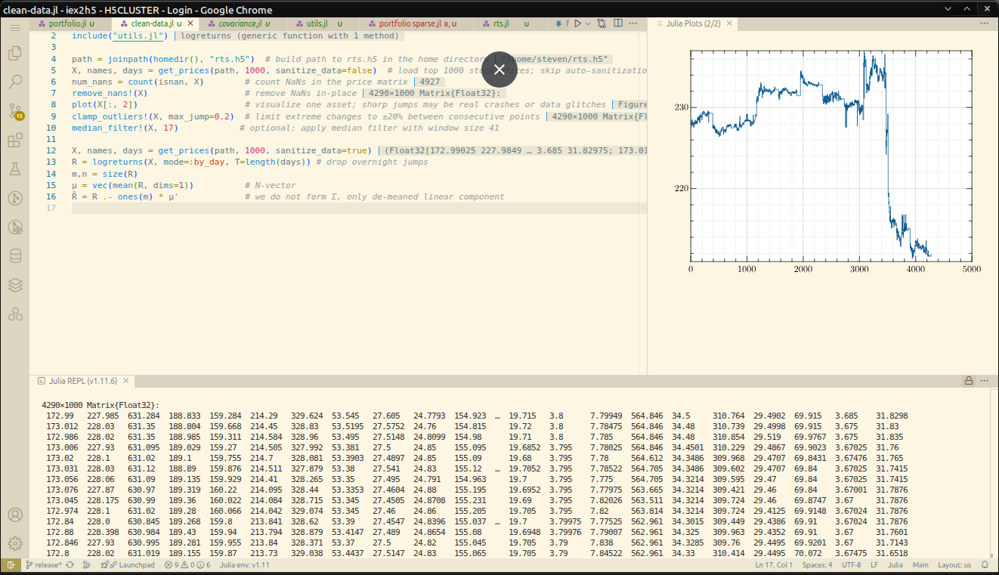

Overview
The Investors Exchange (IEX) offers raw packet captures brimming with market microstructure — but let’s face it, wrangling .pcap.gz files isn't anyone’s idea of alpha. IEX2H5 makes that data instantly usable.
- Turn raw PCAP into signals — parses IEX TOPS trades and quotes straight from wire-speed Ethernet frames
- Streamline your edge — compresses and structures data in fast, columnar HDF5 format (ideal for ML, time-series, or quant research)
- Convert ticks to candles — transform tick-level data into regularized ask,trade,bid matrices at any interval
- Designed for quants — extract bid/ask flow, trade pressure, and instrument-level stats
- Multi-format I/O — read/write in HDF5, CSV, JSON, or Redis for real-time and historical workflows
- Language-agnostic — plug it into your stack: Python, Julia, MATLAB, R, or C++ — no sweat
- Built-in benchmarking — know your latency, throughput, and storage profile across formats
Whether you're backtesting a stat-arb strategy, modeling market impact, or feeding deep learning pipelines — IEX2H5 gets you from raw to alpha, fast.

Features at a Glance
- Zero-hassle setup — all third-party libraries are vendored in
thirdparty/, no external dependencies or version mismatches - C++23 low-latency core — built with H5CPP custom filtering pipeline for maximum throughput
- Plug-and-play output — stores tick or OHLC data in HDF5, ready to consume from:
- Easily integrable — works out of the box with your existing backtest engine, simulator, or research notebook
- Flexible export formats — convert to CSV, JSON, or Redis for real-time or post-trade analytics
- Julia:
HDF5.jl,JLD2.jl - Python:
h5py,pandas,tables - MATLAB: native HDF5 I/O
- : H5CPP, HDF5 C API
- Rust: hdf5 rust
- R: hdf5r
From Raw Ticks to Clean RTS in Seconds
Get IEX market data flowing through your stack in just a few keystrokes.
# 1. Download the IEX TOPS dataset for August 1, 2025 or from
iex-download --tops --from 2025-08-01
# 2. Convert the raw packet captures into a time-indexed HDF5 container
iex2h5 -o ~/iex.h5 --time-interval 00:01:00 ~/data/2025-08-??.pcap.gz
Need Tick Data for Archival?
Grab every microsecond detail — then resample it later:
# Convert raw PCAP files to IRTS (tick-level HDF5 stream)
iex2h5 -o ~/iex.h5 --convert irts ~/data/2025-08-??.pcap.gz
# Downsample IRTS into 1-second RTS format asks/trades/bids + stats for analysis
iex2h5 -o ~/iex.h5 -o rts.h5 --time-interval 00:00:01 --date-range 2025-08-01:today
Whether you're reconstructing order flow or preparing factor inputs for your ML model — IEX2H5 gives you full control over granularity and full speed without compromise.
Who It's For
-
Traders & Quants
- Backtesting at scale — plug HDF5 directly into your engine.
- Alpha prototyping — ticks → features → PnL in minutes.
- Market replay — reconstruct sessions & stress events.
- Slippage & impact — quote/trade flow, execution timing.
- Low-latency I/O — fast reads for factor & signal stacks.
- Cross-format export — HDF5 ⇄ CSV/JSON/Redis for infra tests.
For Researchers & Data Scientists
- Clean, structured datasets — columnar, indexed HDF5.
- Microstructure studies — quote dynamics, trade pressure.
- ML & stats pipelines — PCA, factors, deep nets, RL.
- Reproducible experiments — fixed schema & versioned data.
- Language-agnostic — Julia, Python, MATLAB, R, C++.
- Teaching & labs — realistic data without live-feed hassles.